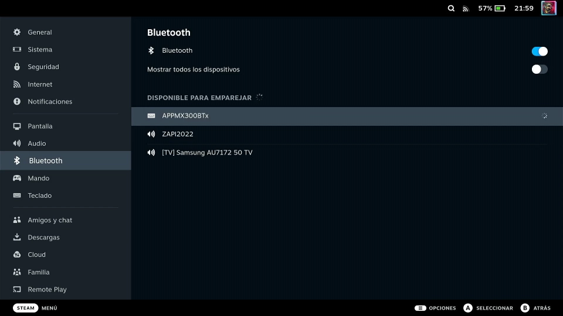
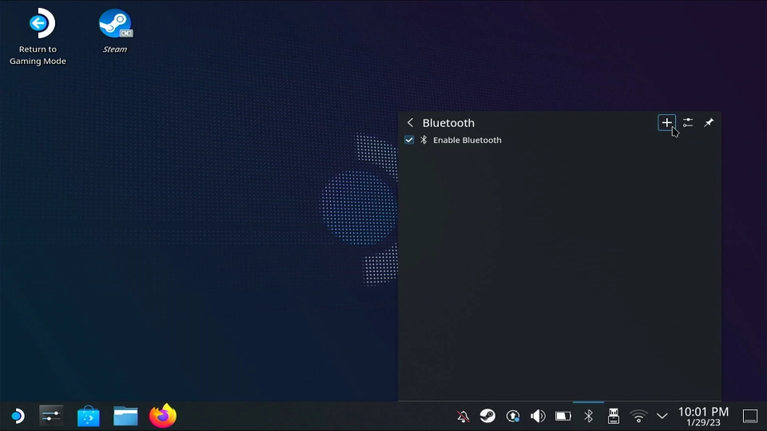
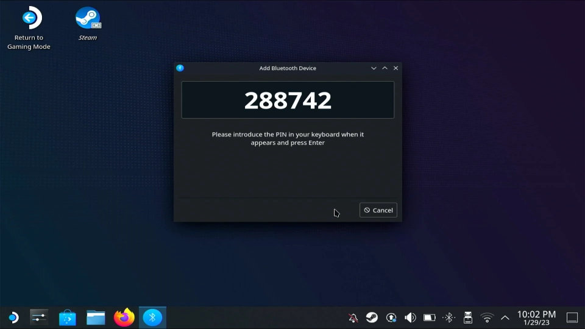
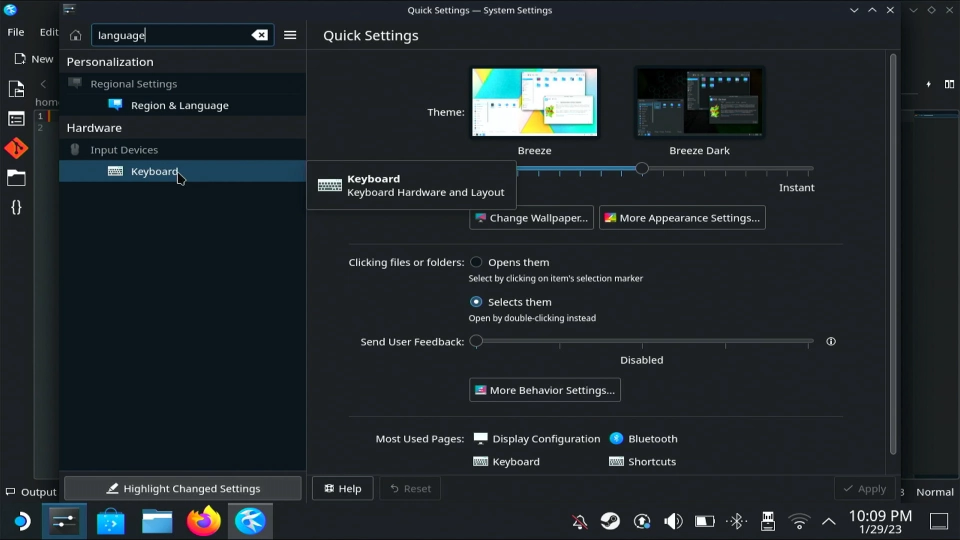
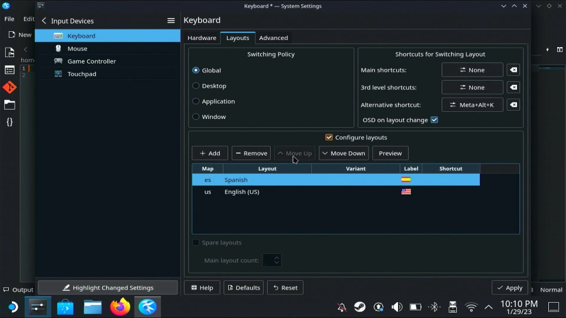

Cómo conectar un teclado bluetooth y otros dispositivos a Steam Deck
ÍNDICE
- Conectar un dispositivo Bluetooth a Steam Deck
- Cómo conectar un teclado bluetooth a Steam Deck
- Cambiar la distribución de teclado
VÍDEO TUTORIAL
1. Conectar un dispositivo Bluetooth a Steam Deck
Es tan sencilo como abrir el menú con el botón "STEAM" e irnos a "Parámetros" > "Bluetooth". Una vez allí, encendemos el Bluetooth y buscamos nuestro dispositivo en la lista de abajo. Finalmente, pulsamos el botón "A" y le damos a "conectar"
1.1 Problemas al intentar conectar un teclado Bluetooth a Steam Deck
Es muy probable que cuando hayas intentado conectar un teclado Bluetooth a Steam Deck te haya resultado imposible, ya que, por lo general, es necesario introducir un código para poder emparejarlo. Esto se hace así por motivos de seguridad pero no te preocupes porque en este post te mostraré cómo emparejar un teclado Bluetooth con Steam Deck.

{kind=link}
2.Cómo conectar un teclado bluetooth a Steam Deck
⚠️ACLARACIÓN⚠️
Este proceso solo es necesario hacerlo la primera vez que conectamos el teclado a la consola. Tras esto, podremos conectarlo y desconectarlo desde los parámetros del modo gaming.
2.1. Ir al modo escritorio y añadirlo desde ahí
Lo que debemos hacer es ir al modi escritorio. Una vez allí, nos vamos a la bara de tareas y pulsamos en el símbolo de Bluetooth, a la derecha. Luego, se nos abrirá una pequeña ventana. en la parte superior derecha encontraremos tres iconos. Cuando los localicemos, pulsaremos en el "+":

{kind=link}
2.2. Buscamos el dispositivo e introducimos el código
Nos aparecerá en pantalla una lista de dispositvos detectados por la consola. Seleccionamos nuestro teclado y nos aparecerá un código en la pantalla. Lo tecleamos y pulsamos "enter".

{kind=link}
Finalmente, ya habríamos emparejado el teclado con nuestra Steam Deck.
3. Cambiar la distribución de teclado a español
Desde el modo escritorio, abrimos los ajustes y buscamos "language" . Luego, en "Hardware", pulsamos en "keyboard":

{kind=link}
Una vez dentro, nos dirigimos a la pestaña "Layouts". Una vez aquí, pulsamos en "configure layouts" > "+ add". Tras esto, buscamos la distribución en español y la seleccionamos. Finalmente, la movemos hacia arriba con "move up".

{kind=link}